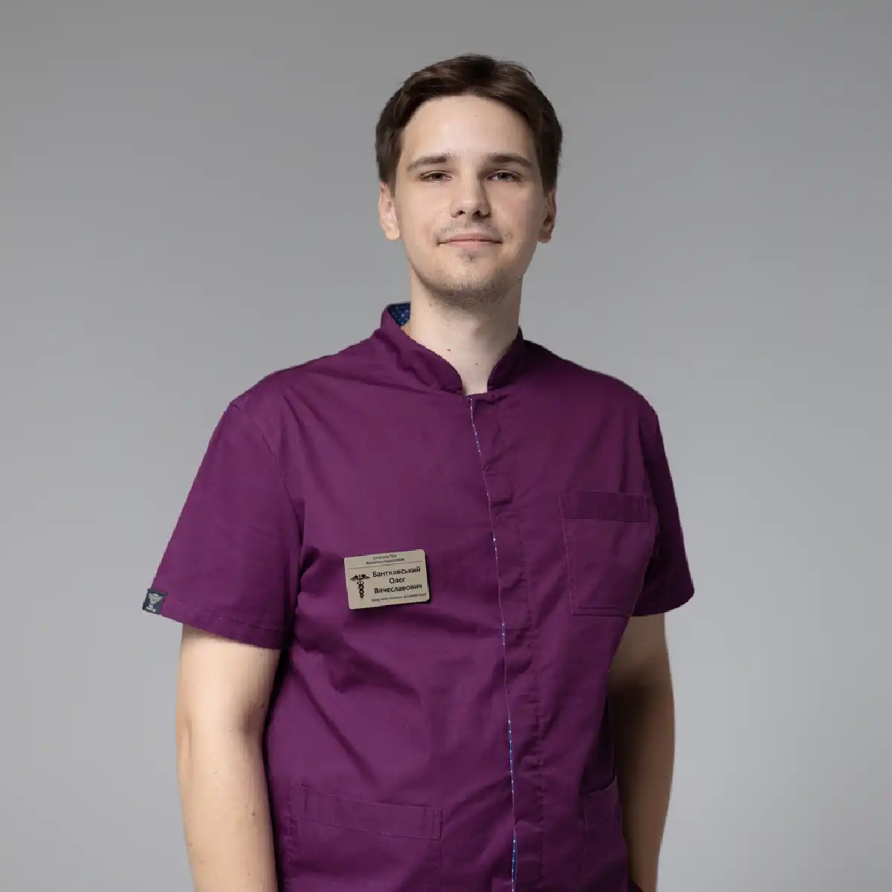

+38(068) 79 72 782
+38(068) 79 72 782Підшивка від алкоголізму в Білгород-Дністровську
Крок до тверезого життя вже сьогодні


Безкоштовна консультація, працюємо цілодобово 24/7
Крок до тверезого життя вже сьогодні

Підшивка від алкоголізму в Білгород-Дністровську — це ефективний, перевірений і широко застосовуваний метод лікування залежності, який допомагає сформувати стійку відмову від вживання алкоголю на фізіологічному та психологічному рівні. Суть процедури полягає у створенні медикаментозного бар’єру: після введення препарату організм починає різко негативно реагувати на алкоголь, що робить його вживання неможливим або вкрай неприємним.
Під впливом препарату блокується нормальна переробка спиртного, внаслідок чого навіть невелика доза алкоголю викликає виражену інтоксикацію — нудоту, слабкість, прискорене серцебиття, головний біль і загальне погіршення стану. Це формує стійку відразу до алкоголю і допомагає людині утримуватися від зривів, особливо в період, коли ризик повернення до вживання найбільш високий. Метод підшивки особливо актуальний для пацієнтів із хронічною формою залежності, тривалими або регулярними запоями, а також для тих, хто вже намагався самостійно відмовитися від алкоголю, але стикався з повторними зривами. У таких випадках медикаментозний захист стає надійною опорою на шляху до тверезості.
Процедура проводиться під контролем лікаря-нарколога після попереднього огляду та оцінки стану пацієнта. Спеціаліст підбирає препарат, дозування і термін дії з урахуванням індивідуальних особливостей організму, що робить лікування максимально безпечним і ефективним. Підшивка може виконуватися як у клініці, так і вдома в Білгород-Дністровському, з дотриманням повної конфіденційності та делікатного підходу.
Підшивка від алкоголізму — це метод кодування, при якому під шкіру пацієнта вводиться спеціальний лікарський препарат, що блокує нормальну переробку алкоголю в організмі. Після введення речовини формується так званий «медикаментозний бар’єр»: при спробі вживання спиртного в організмі накопичуються токсичні продукти розпаду, викликаючи виражену інтоксикацію і різке погіршення самопочуття. Навіть невелика кількість алкоголю може призвести до неприємних симптомів — нудоти, блювання, головного болю, прискореного серцебиття, слабкості, відчуття жару і тривожності. Така реакція формується як захисний механізм, який робить вживання спиртного вкрай небажаним і небезпечним для пацієнта.
Метод підшивки поєднує в собі подвійний вплив: з одного боку — фізіологічний, за рахунок блокування переробки алкоголю, з іншого — психологічний. Людина усвідомлює наслідки вживання і починає сприймати алкоголь не як джерело розслаблення, а як фактор ризику і погіршення стану. Це допомагає сформувати стійку відразу до спиртного і значно знижує ймовірність зривів. Завдяки такому комплексному ефекту підшивка є одним із ефективних методів лікування алкогольної залежності, що дозволяє пацієнтові утримуватися від вживання і поступово переходити до тверезого способу життя.
Для підшивки від алкоголізму застосовуються препарати на основі дисульфіраму та інших активних речовин, які блокують ферменти, що відповідають за розщеплення алкоголю в організмі. В результаті порушується нормальний метаболізм спиртного, і при його вживанні відбувається накопичення токсичних продуктів розпаду, що викликають виражену інтоксикацію. Це створює надійний захисний бар’єр, при якому алкоголь перестає сприйматися організмом як допустима речовина. Використовувані препарати відрізняються пролонгованою дією, що дозволяє забезпечити тривалий захист від вживання — від декількох місяців до року і більше. Завдяки поступовому вивільненню діючої речовини з підшкірної області підтримується стабільний ефект, що знижує ризик зривів і повторного вживання алкоголю.
Підбір препарату здійснюється суворо індивідуально. Лікар-нарколог враховує загальний стан пацієнта, стаж залежності, наявність хронічних захворювань, особливості обміну речовин і бажаний термін кодування. Такий персоналізований підхід дозволяє підібрати оптимальний варіант лікування, який буде максимально ефективним і безпечним. Індивідуально обраний препарат і правильно проведена процедура підшивки значно підвищують шанси на тривалу ремісію, допомагають знизити тягу до алкоголю і сформувати стійку відмову від його вживання.
Процедура підшивки від алкоголізму починається з обов’язкової консультації лікаря-нарколога, в ході якої проводиться ретельна оцінка стану пацієнта, уточнюється анамнез і виключаються можливі протипоказання. Важливою умовою є повна тверезість: пацієнт повинен утримуватися від вживання алкоголю протягом певного часу перед процедурою, щоб забезпечити безпеку та ефективність лікування. Перед проведенням підшивки лікар може додатково оцінити життєво важливі показники — артеріальний тиск, пульс, загальне самопочуття, а при необхідності призначити додаткові обстеження. Це дозволяє підібрати оптимальний препарат і термін його дії з урахуванням індивідуальних особливостей організму.
Після підготовки виконується невелике хірургічне втручання: препарат вводиться під шкіру через мінімальний розріз, зазвичай в області, де він буде надійно зафіксований і поступово вивільнятиметься. Процедура проводиться швидко, з дотриманням усіх медичних стандартів і правил стерильності, і, як правило, добре переноситься пацієнтами. Госпіталізація в більшості випадків не потрібна — вже незабаром після процедури пацієнт може повернутися до звичного способу життя, отримавши при цьому рекомендації лікаря щодо подальшої поведінки, відновлення та дотримання тверезості.
Термін дії підшивки від алкоголізму може становити від декількох місяців до декількох років, залежно від обраного препарату, його дозування та індивідуальних особливостей організму пацієнта. Тривалість ефекту також залежить від стажу вживання алкоголю, ступеня сформованої залежності та швидкості обмінних процесів в організмі. Протягом усього періоду дії препарату зберігається медикаментозний бар’єр, при якому вживання алкоголю викликає виражену негативну реакцію. Це допомагає пацієнтові утримуватися від зривів, особливо на ранніх етапах відмови від спиртного, коли ризик повернення до звички найбільш високий. Тривала дія підшивки дозволяє сформувати стійкі поведінкові зміни та закріпити тверезий спосіб життя.
Тривалість кодування підбирається спільно з лікарем-наркологом. Спеціаліст враховує цілі лікування, рівень мотивації пацієнта, загальний стан здоров’я і рекомендує оптимальний термін для досягнення максимального результату. При необхідності після закінчення дії препарату можливе повторне проведення процедури для продовження ефекту і зміцнення досягнутого результату.
При вживанні алкоголю після підшивки розвивається виражена негативна реакція організму, пов’язана з порушенням нормальної переробки спиртного і накопиченням токсичних продуктів його розпаду, насамперед ацетальдегіду. Ця речовина чинить сильний отруйний вплив, тому навіть мінімальна доза алкоголю може викликати різке погіршення самопочуття. В результаті вживання спиртного стає не тільки неприємним, а й потенційно небезпечним для здоров’я.
Найчастіше виникають такі симптоми, як нудота і багаторазове блювання, прискорене серцебиття, виражена слабкість, головний біль, почервоніння шкіри обличчя і шиї, відчуття жару, запаморочення і тривожність. Також можуть спостерігатися відчуття нестачі повітря, пітливість, тремтіння в тілі, панічні реакції та загальне погіршення стану. У важчих випадках можливі стрибки артеріального тиску, задишка, виражена інтоксикація, порушення серцевого ритму і значне погіршення самопочуття. Інтенсивність реакції залежить від кількості випитого алкоголю, дозування препарату, тривалості його дії та індивідуальних особливостей організму пацієнта.
Така реакція формує потужний захисний механізм, при якому алкоголь починає асоціюватися виключно з негативними відчуттями. Організм «запам’ятовує» цю реакцію, і у людини виробляється стійка відраза до спиртного. На цьому тлі знижується не тільки фізична можливість вживання, а й психологічна тяга до алкоголю. Пацієнт починає усвідомлено уникати ситуацій, пов’язаних із вживанням, розуміючи наслідки і відчуваючи внутрішнє неприйняття.
З часом це сприяє формуванню нового поведінкового стереотипу: алкоголь перестає сприйматися як спосіб розслаблення або уникнення проблем, а асоціюється з погіршенням стану і ризиком для здоров’я. Це значно знижує ймовірність зривів, особливо в перші місяці після лікування, коли залежність ще може проявлятися на психологічному рівні. Підшивка діє комплексно: створює надійний фізіологічний бар’єр, що блокує можливість безпечного вживання алкоголю, і одночасно формує стійке психологічне неприйняття спиртного. Такий подвійний ефект допомагає пацієнтові утримуватися від вживання, закріпити тверезий спосіб життя і значно знизити ризик повернення до залежності в майбутньому.
Після процедури підшивки формується стійка відмова від алкоголю як на фізіологічному, так і на психологічному рівні. За рахунок дії препарату організм перестає сприймати спиртне як безпечну речовину, а негативні наслідки його вживання формують внутрішній бар’єр, який допомагає утримуватися від зривів. Вже в перші тижні після процедури багато пацієнтів відзначають помітне зниження тяги до алкоголю і поліпшення загального стану. Поступово відновлюється робота внутрішніх органів, знижується навантаження на печінку, серце і нервову систему. Поліпшується самопочуття, з’являється більше енергії, підвищується працездатність і концентрація уваги. Нормалізується сон, зменшується тривожність, стабілізується емоційний стан, зникають дратівливість і перепади настрою.
Крім фізичного поліпшення, важливу роль відіграє психологічний аспект. Пацієнт починає відчувати контроль над своїм життям, з’являється впевненість у власних силах і мотивація до подальших змін. Йде залежність від звичних сценаріїв поведінки, пов’язаних із вживанням алкоголю, формуються нові здорові звички та способи справлятися зі стресом. Метод підшивки допомагає не тільки тимчасово обмежити вживання, а й закріпити тверезий спосіб життя. При поєднанні з психологічною підтримкою і зміною способу життя результат стає більш стійким і довгостроковим, що значно знижує ризик повернення до залежності.
Вартість підшивки від алкоголізму в Білгород-Дністровському починається від 15000 грн.
| Популярні послуги | Ціна |
|---|---|
| Нарколог Білгород-Дністровськ | Від 2199 грн |
| Крапельниця від алкоголю | Від 2199 грн |
| Виведення із запою вдома | Від 2199 грн |
| Кодування від алкоголізму | Від 6000 грн |
Підшивка від алкоголізму проводиться повністю анонімно, без передачі особистих даних третім особам і без постановки на облік. Конфіденційність є одним із ключових принципів лікування, особливо для пацієнтів, які хочуть зберегти свою репутацію, робоче місце і особисте життя в таємниці від оточуючих. Багато людей відкладають звернення за допомогою саме через страх розголосу, тому анонімний формат дозволяє зробити перший крок до лікування без зайвого стресу. Вся інформація про пацієнта, його стан, проведену процедуру і результати лікування залишається суворо між пацієнтом і лікарем. Дані не передаються в державні установи, бази обліку або сторонні організації. Медична допомога надається максимально делікатно, з дотриманням лікарської таємниці та етичних норм.
При необхідності процедура може бути проведена з виїздом лікаря додому в Білгород-Дністровську. Це дозволяє пройти лікування у звичній обстановці, без відвідування клініки і без ризику бути поміченим. Такий формат особливо зручний для пацієнтів, які цінують приватність або відчувають фізичний дискомфорт і не можуть самостійно дістатися до медичного закладу. Анонімність також позитивно впливає на психологічний стан пацієнта. Людина відчуває себе спокійніше, впевненіше і більш відкрито спілкується з лікарем, що дозволяє точніше оцінити проблему і підібрати ефективне лікування. Відсутність страху осуду або розголосу допомагає зосередитися на головній меті — відновленні та відмові від алкоголю.
Крім підшивки від алкоголізму, існують і інші ефективні методи лікування залежності, які підбираються індивідуально з урахуванням стану пацієнта, стадії захворювання і рівня мотивації до одужання. Сучасна наркологія пропонує комплексний підхід, що дозволяє впливати як на фізичну, так і на психологічну складову залежності. До основних методів лікування належать:
Кожен із цих методів має свої особливості та показання. У ряді випадків найкращий результат досягається при їх поєднанні, коли одночасно усувається фізична залежність і опрацьовуються психологічні причини вживання. Вибір методу лікування залежить від стану пацієнта, тривалості залежності, наявності супутніх захворювань і готовності до змін. Саме тому важливо звернутися до фахівця, який зможе провести діагностику і підібрати найбільш ефективну та безпечну схему терапії.
Лікування алкогольної залежності проводиться з дотриманням повної конфіденційності, без передачі особистих даних і без розголосу. Пацієнт отримує кваліфіковану медичну допомогу в максимально делікатній обстановці, що особливо важливо для людей, які хочуть зберегти приватність і уникнути зайвого стресу. Такий підхід допомагає почуватися спокійніше, довіряти лікарю і зосередитися на відновленні без страху осуду або наслідків для соціального життя.
Підшивка від алкоголізму проводиться під обов’язковим контролем лікаря-нарколога, що забезпечує високий рівень безпеки та ефективності лікування. Перед процедурою виконується ретельний огляд пацієнта, оцінюється загальний стан здоров’я, уточнюється наявність хронічних захворювань і виключаються можливі протипоказання. При необхідності можуть бути призначені додаткові обстеження.
Під час проведення процедури дотримуються всі медичні стандарти і правила стерильності, що мінімізує ризики ускладнень. Лікар підбирає препарат, дозування і термін дії індивідуально, з урахуванням особливостей організму пацієнта. Після підшивки пацієнт отримує рекомендації щодо подальшого способу життя, а також роз’яснення про можливі реакції при вживанні алкоголю. Такий комплексний і професійний підхід дозволяє зробити лікування максимально безпечним, передбачуваним і ефективним, забезпечуючи стійкий результат.
У Білгород-Дністровську доступна цілодобова наркологічна допомога з виїздом додому, що дозволяє отримати кваліфіковане лікування без зволікання і зайвого стресу. Це особливо важливо при запоях, вираженій інтоксикації або необхідності термінової допомоги, коли стан пацієнта може швидко погіршуватися.
Лікар-нарколог приїжджає в найкоротші терміни після звернення, проводить діагностику, оцінює загальний стан, вимірює тиск, пульс та інші життєво важливі показники. На основі отриманих даних підбирається індивідуальна схема лікування, спрямована на стабілізацію стану, детоксикацію організму і відновлення роботи внутрішніх органів. Лікування може включати крапельниці, медикаментозну підтримку і рекомендації щодо подальшого відновлення. При необхідності спеціаліст надає рекомендації з кодування або комплексного лікування залежності. Вся допомога надається анонімно, з дотриманням повної конфіденційності та делікатного підходу.
Телефонуйте прямо зараз: +38(050-021-69-57)

Так, ми суворо дотримуємося повної конфіденційності на всіх етапах лікування. Інформація про пацієнта, діагноз та проходження терапії не передається третім особам. Звернення до нас не тягне за собою постановку на облік. Ви можете бути впевнені у безпеці та анонімності.
Програма лікування розробляється індивідуально після консультації з фахівцем. Враховуються вид залежності, її тривалість, фізичний та психологічний стан пацієнта. Такий підхід дозволяє підвищити ефективність терапії та знизити ризик зриву. Ми не використовуємо шаблонні рішення.
Так, ми супроводжуємо пацієнтів і після основного курсу лікування. Проводяться консультації, рекомендації щодо адаптації та профілактики рецидивів. За потреби можлива подальша психологічна підтримка. Це допомагає зберегти результат та повернутися до повноцінного життя.
Анонимно

Помогли при наркотической зависимости
Номер телефону:
+380 (68) 797 27 82
+380 (50) 021 69 57
Адресу наркологічного центра вашого міста уточнюйте за
телефоном
Працюємо: Київ, Одеса, Львів, Харків, Дніпро, Запоріжжя,
Черкасах, Чугуєві, Чорноморську, Кам'янському
Telegram: t.me/umbrellaplus
Графік работы: Цілодобово